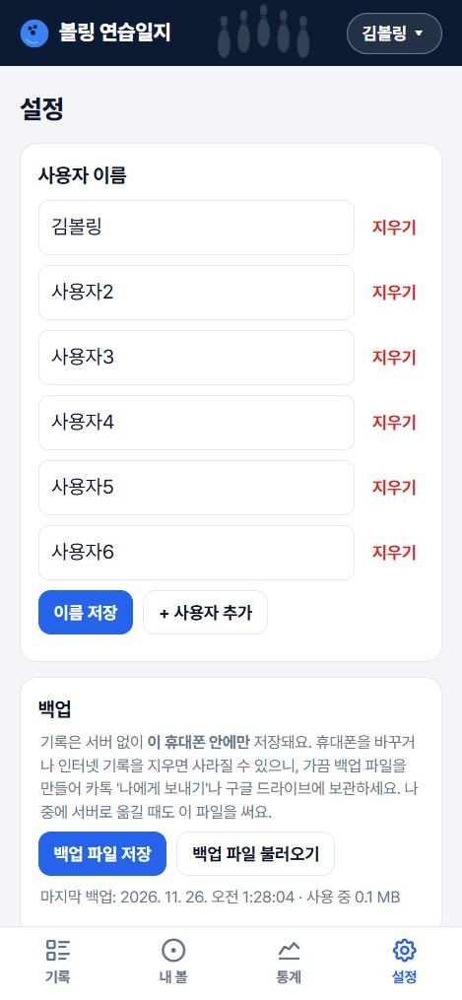
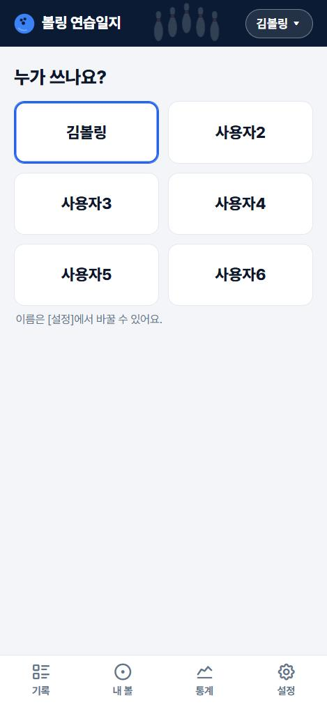
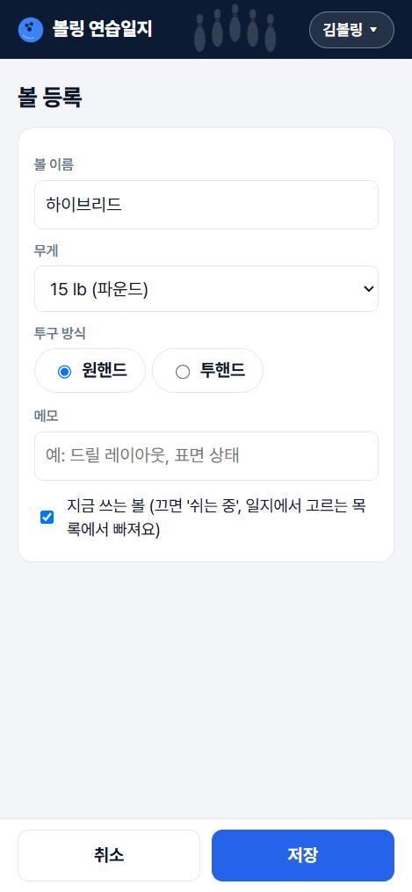
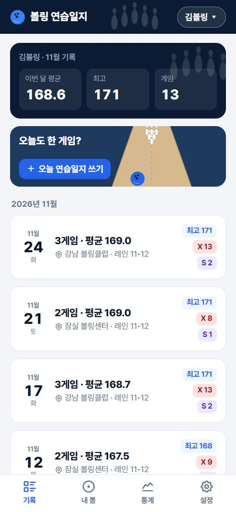
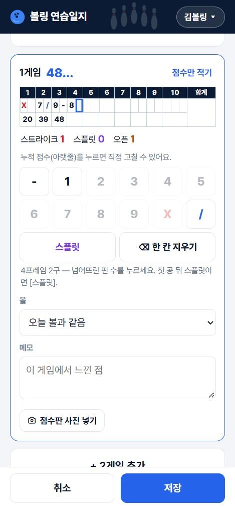
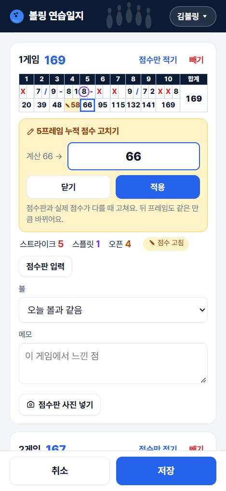
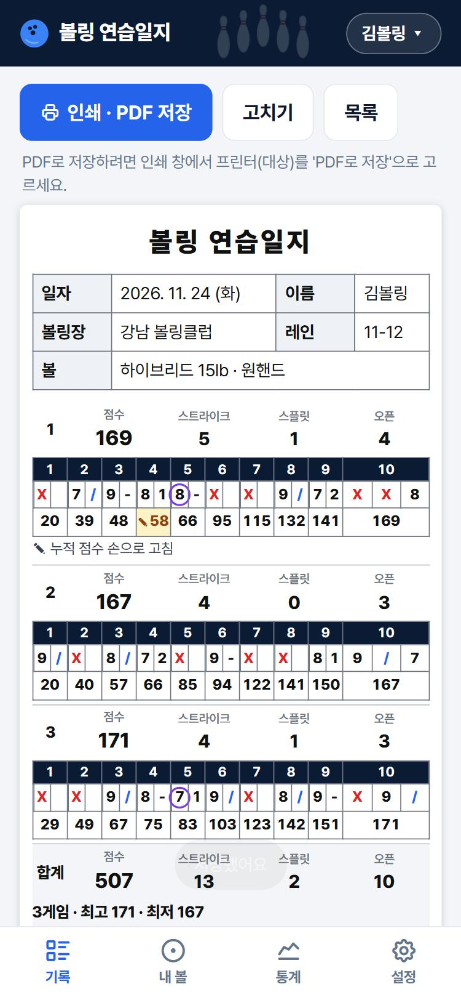
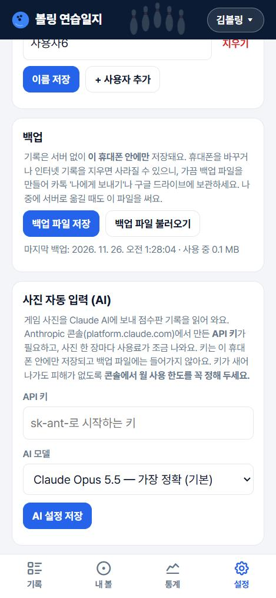

1홈 화면에 앱 아이콘 만들기
받은 주소를 휴대폰 브라우저로 연 뒤, 홈 화면에 추가하면 앱처럼 바로 열려요. 볼링장 와이파이가 끊겨도 열려요.
안드로이드 (크롬)오른쪽 위 ⋮ → 홈 화면에 추가 → 설치
아이폰 (사파리)아래쪽 공유 → 홈 화면에 추가 → 추가
꼭 알아두세요 — 기록은 서버가 아니라 이 휴대폰 안에 저장돼요. 다른 주소로 열거나 다른 브라우저로 열면 기록이 안 보여요. 늘 같은 아이콘으로 여세요.
2내 이름 정하고 고르기
- 처음엔 "사용자1~6"이 있어요. 아래 탭에서 설정을 눌러요.
- 사용자 이름 칸에 내 이름을 쓰고 이름 저장을 눌러요. 한 휴대폰을 가족이 같이 쓰면 이름을 여러 개 넣어요.
- 오른쪽 위 이름 단추를 누르면 "누가 쓰나요?" 화면이 나와요. 내 이름을 눌러요.
팁 — 사람마다 기록·볼·통계가 따로 저장돼요.

2내 이름 고르기 (이어서)
파란 테두리가 지금 고른 사람이에요. 나중에 다른 사람으로 바꿀 때도 오른쪽 위 이름 단추를 눌러요.

3내 볼 등록
- 아래 탭 내 볼 → + 볼 등록
- 볼 이름, 무게(파운드), 원핸드/투핸드를 고르고 저장
- 스페어볼도 있으면 하나 더 등록해요.
팁 — 볼을 등록해 두면 통계에서 볼별 평균을 볼 수 있어요. 안 쓰는 볼은 지우지 말고 "지금 쓰는 볼"을 꺼 두세요.

4첫 연습일지 쓰기
- 아래 탭 기록에서 레인 그림의 + 오늘 연습일지 쓰기를 눌러요.
- 날짜·볼링장·레인·오늘 볼을 넣어요. 볼링장은 한 번 쓰면 다음부터 자동으로 들어가요.
- 맨 위 남색 칸에 이번 달 평균·최고·게임 수가 나오고, 아래에 날짜별 기록이 쌓여요.

5점수판 입력
- 공마다 넘어뜨린 핀 수를 눌러요. X 스트라이크, / 스페어, - 0개.
- 첫 공 뒤 스플릿이었으면 바로 스플릿을 눌러요. 점수판 숫자에 동그라미가 생겨요.
- 잘못 눌렀으면 ⌫ 한 칸 지우기
- 점수·스트라이크·스플릿·오픈 개수는 자동으로 계산돼요. 다 치면 저장
점수만 적고 싶을 때 — 게임 오른쪽 위 점수만 적기를 누르면 점수·개수만 숫자로 넣어요.
점수판 사진 — 점수판 사진 넣기로 볼링장 화면을 찍어 두면 기록지에 같이 붙어요.
점수판 사진 — 점수판 사진 넣기로 볼링장 화면을 찍어 두면 기록지에 같이 붙어요.

6중간 점수 고치기
볼링장 화면 점수와 앱 점수가 다를 때(핀 수를 잘못 눌렀거나 볼링장 기계가 다르게 셌을 때) 누적 점수를 직접 고쳐요.
- 점수판 아랫줄 누적 점수 칸을 눌러요.
- 노란 상자에 맞는 점수를 넣고 적용
- 고친 칸은 노란색 ✎로 표시되고, 뒤 프레임도 같은 만큼 바뀌어요.
- 되돌리려면 그 칸을 다시 눌러 계산값으로
팁 — 마지막 칸(10프레임)을 고치면 그게 그 게임 점수가 돼요. 평균·통계에도 고친 점수가 들어가요.

7기록지 보기 · 인쇄
- 저장하면 그날 A4 기록지가 나와요. 기록 목록에서 날짜 카드를 눌러도 나와요.
- 인쇄 · PDF 저장 → 프린터를 PDF로 저장으로 고르면 파일로 남아요.
- 고칠 게 있으면 고치기

8백업과 사진 AI (선택)
- 백업 — 설정 › 백업 파일 저장. 한 달에 한 번쯤 만들어 카톡 '나에게 보내기'나 구글 드라이브에 두세요. 휴대폰을 바꾸면 백업 파일 불러오기로 옮겨요.
- 사진 AI 자동 입력 — Anthropic 콘솔에서 만든 API 키를 설정 › 사진 자동 입력 (AI)에 넣으면, 점수판 사진으로 점수판을 자동으로 채워요. 사진 한 장마다 사용료가 조금 나와요. 콘솔에서 월 사용 한도를 꼭 정해 두세요.
AI가 읽은 뒤 — 앱이 계산한 누적 점수와 사진의 누적 점수가 다르면 그 칸이 빨갛게 나와요. 사진과 비교해 고치세요.
